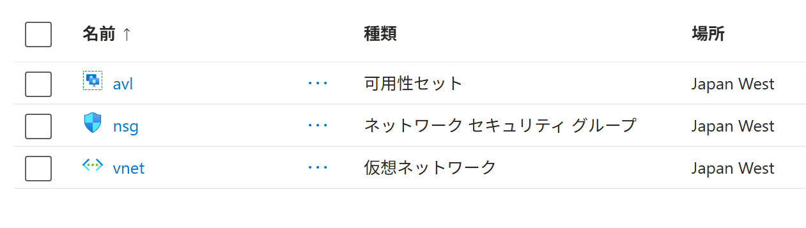
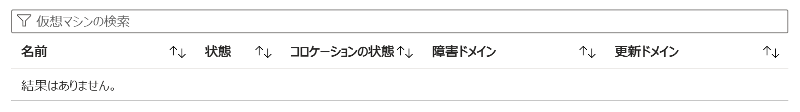

Azure ポータル で 可用性セット を作成する
適用対象: ✔️ 可用性セット
この演習では、Azure ポータル を使用して 可用性セット を作成します。
所要時間: 約 15 分
先行の演習
この演習を始める前に リソースグループを作成する を完了してください。
Azure グローバル基盤

ラック ＞ サーバ
ラック＝サーバラック
サーバ＝ラックマウントサーバ

サーバ ＞ 仮想マシン
仮想マシンは、物理マシン上にソフトウェアで作られるコンピューターです。
物理マシンの CPU やメモリなどを割り振って動作し、実物のコンピューターのように利用できます。
物理マシンの資源を共有して動作するため、1台の物理マシン上に複数の仮想マシンを作成できます。

可用性セット
可用性セットは、仮想マシンを一つのデータセンター内で分散配置し、可用性を高めるための仕組みです。
可用性セットは、障害ドメインと更新ドメインという2つの考え方で構成されます。
- 障害ドメイン：物理的なグループ
- 更新ドメイン：論理的なグループ
- サーバラックの電源やネットワークに障害が発生しても、物理的に別々のサーバラックに仮想マシンを分散配置していれば、可用性セットの仮想マシンがすべて同時に停止することを避けられます（障害ドメイン）。
- Azure側がOSのアップデートなどでサーバを更新しても、更新のタイミングが違うグループに仮想マシンを分散配置していれば、可用性セットの仮想マシンがすべて同時に再起動することを避けられます（更新ドメイン）。
仮想マシン 4台 を 可用性セットに配置した際に、それぞれの仮想マシンが 障害ドメイン と 更新ドメイン にどのように分散配置されるかの例を下記に示します。

 ※ 以前のAzureではOSやホストの更新時に再起動が必須でしたが、現在 Azureのプラットフォーム更新の多くは再起動を伴わずに実行されます。
※ 以前のAzureではOSやホストの更新時に再起動が必須でしたが、現在 Azureのプラットフォーム更新の多くは再起動を伴わずに実行されます。
タスク 1: 可用性セット の作成
可用性セット を作成します。
- 上部の検索ボックスに
可用性セットと入力します。 - [可用性セット] を選択します。
- [＋ 作成] を選択します。
- 可用性セットの [作成] を選択します。
- 使用する サブスクリプション を選択します。
- リソース グループで [msaz-rg] を選択します。
- 名前に
msaz-avlと入力します。 - 利用可能な リージョン を選択します。
- 障害ドメインで [2] を選択します。
- 更新ドメインで [5] を選択します。
- [確認および作成] を選択します。
- 内容を一通り確認し、[作成] を選択します。
- 完了を待ちます。
タスク 2: 作成されたリソースの確認
可用性セット が作成されていることを確認します。
- ポータルメニューから [リソース グループ] を選択します。
- [msaz-rg] を選択します。
- リソースの一覧が表示されます。可用性セット（
msaz-avl） が作成されていることを確認します。
- [msaz-avl] を選択します。
- 仮想マシンが存在しないこと を確認します。
